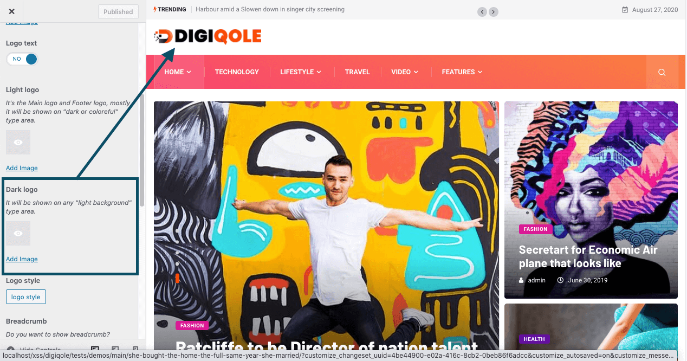
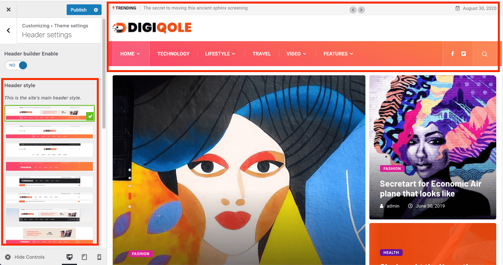
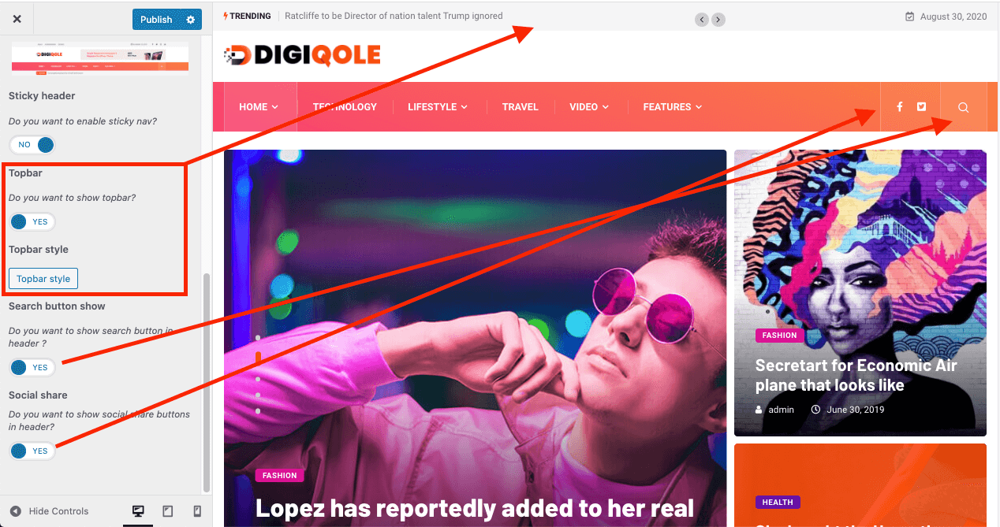
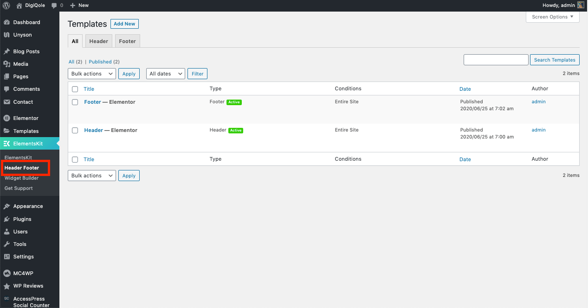
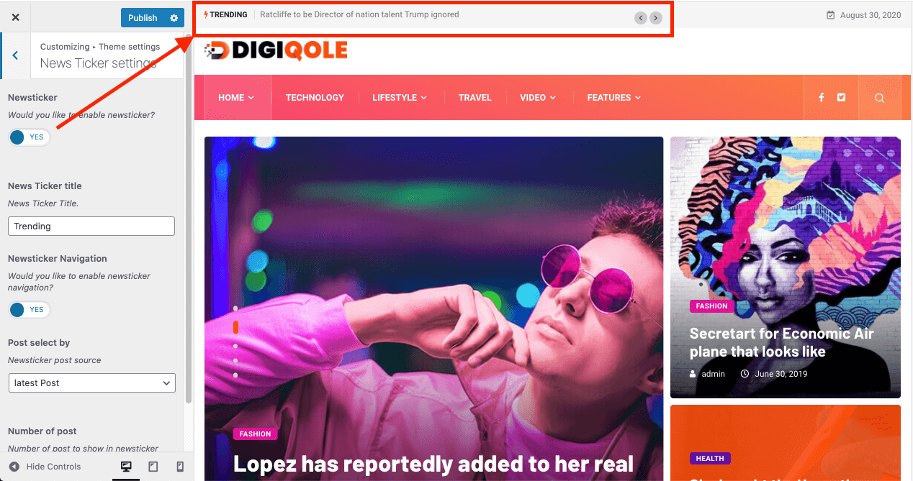
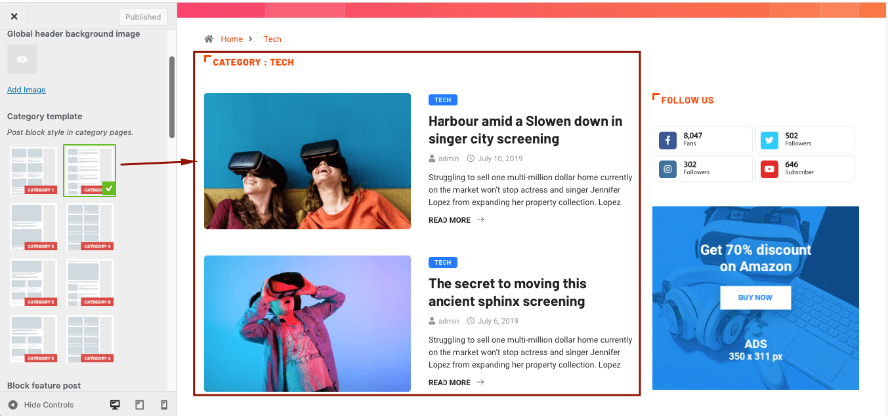
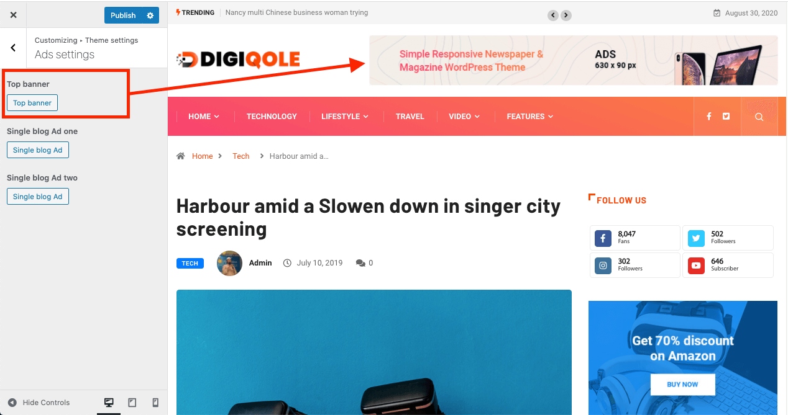
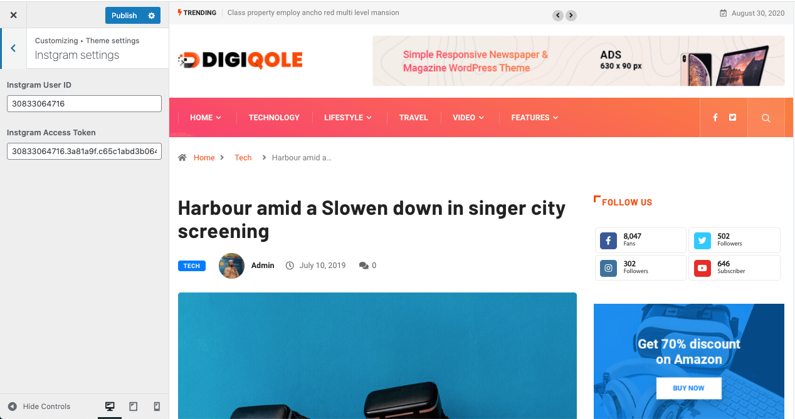
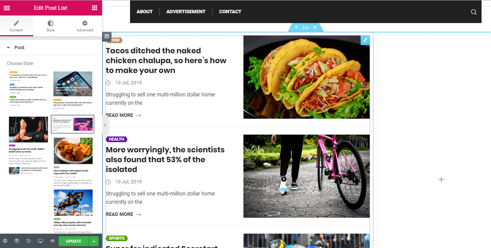

Getting Started #back to top
- Item Name : DigiQole - WordPress Theme
- Item Version : V 1.4.2
- Author : Tripples
- Support : Support Center
First of all, Thank you so much for purchasing this template and for being my loyal customer. You are awesome!
You are entitled to get free lifetime updates to this product + exceptional support from the author directly.
Be careful while editing the theme. If not edited properly, the design layout may break completely.
No support is provided for faulty customization.
Introduction and quick start guide. #back to top
Thank you so much for purchasing our theme called Digiqole - WordPress Theme. Please feel free to contact us if you have questions or problems about this theme. No guarantee is provided, but we will do our best to provide you with the best possible assistance.
First Step
- Documentation - That's where you
- License - Some info's about theme licencing terms
- Dummy Content - Placeholder content for testing the theme
- SampleData - Import Data to get the exact Site as the Preview Page
- Upload - This is where all Theme files are (zipped & unzipped format)
Please read more about wordpress here
What are Parent and Child Themes?
A WordPress child theme takes the functionality of another theme, named parent theme. It gives you the possibility to customize an existing theme. Instead of modifying the theme files directly, you can activate the child theme and work within it.
All customizations are stored in the child theme and anything in the child takes priority over the parent. So if the same file exist in both child and parent, the file from the child will control that aspect of the theme.
Working with child themes, your customizations are safeguarded from future upgrades because you only upgrade the parent theme, which you never edit, while the customizations are protected in your child theme which you don’t upgrade.
Why use a Child theme?
Safe Updates. You can easily modify your website using child themes without ever changing the parent theme. When a new version of the parent theme appears, you can safely update it as all your modifications are saved in the child theme. Easy to Extend. A child theme has a great flexibility. It does not require writing a lot of code. You can modify only those template files and functions that you need.
Install Theme
The first option how to install this Theme would be to directly upload the Digiqole.zip file via WordPress Theme Uploader.- Minimal requirements:
- PHP 7+
- Php.ini settings:
max_execution_time = 600 upload_max_filesize = 32M post_max_size = 48M memory_limit = 512M max_input_time = 300 max_input_vars = 10000 - MySQL 5.0+
- Wordpress 5+
- Please make sure you have proper version of wordpress installed.
- Log Into WordPress and go to Appearance > Themes
- Find the Digiqole Theme and click activate
- FTP Upload:
- Unzip the "Digiqole.zip" file from theme folder
- Open up your FTP manager and connect to your hosting
- Browse to wp-content/themes
- Upload the Digiqole in theme folder
- Log Into WordPress and go to Appearance > Themes
- Find the Digiqole Theme and click activate
-
Wordpress Dashboard:

- Log into your WordPress backend
- Navigate to Appearance > Themes
- Click Install Themes
- Click Upload
- Now you just need to find the "Digiqole.zip" in the Upload folder and hit Install now.
- After complete installation click on active button to active The theme.
Install Required Plugins
After activating the Digiqoletheme you will see the below window. and install all required plugins.
Use DigiQole on existing Site without Demo Data
Demo Data XML Import Manually who has existing Site
Oneclick Demo Content Install
!!! Don't install Oneclick Demo content if you have an existing Site, Use Manual Demo Data XML Import.

It will take some times to install full demo data like demo site.
You are done ! :)
Video of Installation and Overview of DigiQole
Theme Update
Get notify and update theme automatically
Once you have installed one of our themes, there is an easy way to stay updated with future releases. All you need is install Envato Market plugin.
Step 1: Download the plugin from GitHub repository.
Step 2: Install this plugin into your site. It’s a easy way to install plugin.
Step 3: To establish an Envato Marketplace API connection navigate to the Envato Toolkit page and insert your Marketplace username and secret API key in the designated input fields. To obtain your API Key, visit your “My Settings” page on any of the Envato Marketplaces.
Step 4: Once the API connection has been established you will see a list of themes that can be auto installed.
How to update the wordpress theme Manually
Please, follow the doc for better understand : Update Theme manually
Theme Customizer
Navigate to Appearance > Customize for Theme's customizer settings.
General Settings
Navigate to Appearance > Customize > General Settings for Theme's general settings.
Preloader
Theme's initial Preloader options can be changed from here.
Logo
!!! For our Niche demo (Personal Blog, Covid-19, Food Recipe and Newspaper), use ElementsKit's Header Footer Builder from here.
Default Header and Footer's logo change options.

Breadcrumb
Single blog page, category archive page's breadcrumb options.
Social Link Icons
Social link icons can be added from here.

Progress Bar
Blog post reading progress indicator bar can be enabled and customize its color form here.
Custom Container Width
Custom width for websites main container can be set for different devices.
Style Settings
From Appearance-> Customize->Theme settings-> Style Settings , you can change font family, color, font size ,enable dark mode and also heading fonts etc.
Header Settings
!!! For our Niche demo (Personal Blog, Covid-19, Food Recipe and Newspaper), use ElementsKit's Header Footer Builder from here.
From Appearance-> Customize->Theme settings-> Header Settings , you can set different header styles, enable sticky header, topbar, Search button and Social Share buttons.
Different Header Styles can be set from here.
!!! Don't enable the "Header Builder Enable" option if you have enabled the header/footer from ElementsKit > Header Footer option. It will automatically be set from ElementsKit.

Sticky header, topbar settings, Search button and Social Share buttons option for theme header.
ElementsKit Header Footer Builder
For change and create header footer builder go to ElementsKit > Header Footer
ElementsKit Headers

ElementsKit Footers

Header logo Settings
For change logo, navigate to ElementsKit > Header Footer > Headers
Header Mobile Logo
ElementsKit's Intro
For ElementsKit's Header Footer builder, here is a quick introduction about the basics.
News Ticker Settings
From Appearance-> Customize->Theme settings-> News Ticker Settings , you can set the title, navigation settings of the Newsticker widget.
Blog Settings
From Appearance-> Customize-> Theme settings-> Blog settings, you can have the Category Archive page layout change option, feature post enable option, post meta information show option for the archive page, etc.
Category Template
Category archive layout can be changed from here.
If the layout is not changed, check the layout override status from Blog Posts > Categories.
Featured Post
Enable the option for stick the featured post to the top of the page.
Make sure you have checked the post as featured from the post editing view.
Posts Meta Information
Options for showing blogs post meta information.
Category Archive Title
Show or Hide category archive page title.

Readmore & Pagination
Readmore text and pagination placement settings
Title Length Limit
Post title and description text length cropping option.
Blog Single Settings
From Appearance-> Customize ->Theme settings -> Blog Single Settings, you can set the sticky sidebar, post layouts and enable post meta options.
Post Meta Information
Popular post counter, single page post comment, post author and navigation show options can be controled from here.
Infinite Scroll
Enable infinite scrolling for the next posts show after single blog post and set the number of posts should be displayed.
Ads Settings Settings
From Appearance-> Customize ->Theme settings -> Ads Settings Settings, the ads banner image and Adsense code can be placed for tob panner and blog pages.

!!! Don't forget to add # if there is no link available for the ad banner image.
Instagram Settings
From Appearance-> Customize ->Theme settings -> Instagram Settings, Instagram access information should be inserted.
AMP Settings
AMP Plugin Setup
Official AMP plugin can be downloaded from wordpress plugin repository
After installing and activating the plugin, it is required to enable AMP for Mobile versions.
From Appearance-> Customize ->Theme settings -> AMP Settings , the basic settings for AMP as Header Logo, Header Menu, Topbar, Search, Footer Logo, Footer information's can be changed.
Visual Page Builder
Accessing the editor
To start working with Elementor, go to the WordPress dashboard. Then, add a new page by clicking on Pages > Add New. Then, create a new page and save it with the 'full width' template and then click on the 'Edit with Elementor' button.
Elementor UI: Getting to know the interface
The Elementor page builder includes these main areas:
1.
Panel (Top): Use the search field to find a widget.
2.
Widgets / Widget Settings: Choose a widget and configure it.
3.
Preview Button: Enables you to preview the page. Once clicked it
hides/shows the panel.
4.
Panel (Bottom): View page, Go back to Dashboard or Save page.
5.
Content Area: Drag & drop widgets and design your page.
6.
Add New Section / Add Template: Choose between creating a new
section
or inserting an existing template.
Creating your section
A section is the most basic element that you can work with. It's the building block of every page. A section can be set as full width and spread all over the screen, or receive the content area width (by default).
After you create a section you can drag and drop a widget inside. You can also divide each section to few columns. Every page you create can contain as many sections as you want. You can drag a section above or under another one to relocate it.
- Add New Section: Click this button to create a new section or simply drag a widget from the panel and drop it in the content area.
- Select Yout Structure: Choose a structure for your section (Later, you can edit the exact width of every column).
Create Elementor Page
Inserting a widget
Click the content to edit, duplicate or delete a widget. You can also save it as a Global Widget. Add Widget: Drag a widget from the left panel and drop it into a column.
1. To edit a widget, click the pencil icon.
2. On the Panel header, you can choose to edit the widget's content and style.
3. Every widget has a different setting.
4. You can save your current changes at any stage.
5. When you have finished designing, click the 'X' button at the bottom panel and
view the page.

How to get all the elements of our theme?
Just go to elementor editor & see the elements of the "Elementskit" & "Digiqole" category tab.
Elementor add section
Digiqole Main Slider
Digiqole Main Slider 2

Digiqole post grid
Digiqole post tab
Digiqole post block
Digiqole title

Digiqole post list
Digiqole category list
Digiqole Video Post Tab
Digiqole post grid slider
Digiqole post vertical grid slider
Digiqole Footer widget

Digiqole Footer Newsletter
To change the footer newsletter, go to Appearance > Customize >Theme Setting > Footer Settings
Facebook Video#back to top
Please use this link for facebook video
Just set your video ID https://www.facebook.com/video/embed?video_id=YOUR_VIDEO_ID
https://www.facebook.com/video/embed?video_id=10153967346426209
Covid-19 Plugin#back to top
For Covid-19 information install and activate Corona Virus Data plugin
CSS Customization#back to top
Create a css file name style.css file on
Digiqole-child\style.css folder and write your own css
customization.
Some characteristics of the style.css file
- The file is included by default
- The file is the last file to be loaded in your site.
What is a Child Theme?
As indicated in the overview, a child theme inherits the look and feel of the parent theme and all of its functions, but can be used to make modifications to any part of the theme. In this way, customizations are kept separate from the parent theme’s files. Using a child theme lets you upgrade the parent theme without affecting the customizations you’ve made to your site.
Child themes:
- 1.make your modifications portable and replicable;
- 2.keep customization separate from parent theme functions;
- 3.allow parent themes to be updated without destroying your modifications;
- 4. allow you to take advantage of the effort and testing put into parent theme;
- 5.save on development time since you are not recreating the wheel; and
- 6.are a great way to start learning about theme development.
Support Desk #back to top
Please remember you have purchased a very affordable theme and you have not paid for a full-time web design agency. Occasionally we will help with small tweaks, but these requests will be put on a lower priority due to their nature. Support is also 100% optional and we provide it for your connivence, so please be patient, polite and respectful.
Please visit our profile page or ask question in our Support Center
Support for my items includes:- * Responding to questions or problems regarding the item and its features
- * Fixing bugs and reported issues
- * Providing updates to ensure compatibility with new software versions
- * Customization and installation services
- * Support for third party software and plug-ins
- * Make sure your question is a valid Theme Issue and not a customization request.
- * Make sure you have read through the documentation and any related video guides before asking support on how to accomplish a task.
- * Make sure to double check the theme FAQs.
- * Try disabling any active plugins to make sure there isn't a conflict with a plugin. And if there is this way you can let us know.
- * If you have customized your theme and now have an issue, back-track to make sure you didn't make a mistake. If you have made changes and can't find the issue, please provide us with your changelog.
- * Almost 80% of the time we find that the solution to people's issues can be solved with a simple "Google Search". You might want to try that before seeking support. You might be able to fix the issue yourself much quicker than we can respond to your request.
- * Make sure to state the name of the theme you are having issues with when requesting support via ThemeForest.
Image Source #back to top
- https://www.freepik.com/free-photo/dancer-jumping-graffiti-background_2572985.htm#query=dancing%20in%20front%20of%20wall&position=10
- https://unsplash.com/photos/t3dPPL9016E
- https://www.pexels.com/photo/ball-court-design-game-209977/
- https://pixabay.com/photos/astronaut-moon-space-nasa-planet-4106766/
- https://www.pexels.com/photo/usa-rock-antelope-canyon-slot-45839/
- https://unsplash.com/photos/gm8ht3WER6E
- https://www.pexels.com/photo/a-person-wearing-pink-shoes-2280342/
- https://unsplash.com/photos/FZ65n5sAsaY
- https://www.pexels.com/photo/fried-egg-with-plain-rice-on-white-plate-beside-stainless-steel-fork-with-clear-drinking-glass-on-top-table-693270/
- https://pixabay.com/photos/track-race-athletics-sport-fitness-492216/
- https://pixabay.com/photos/jellyfish-under-water-sea-ocean-698521/
- https://unsplash.com/photos/nAsdr5DC2Ss
- https://unsplash.com/photos/VK284NKoAVU
- https://www.pexels.com/photo/woman-drawing-colorful-circles-1391374/
- https://unsplash.com/photos/q-motCAvPBM
- https://www.pexels.com/photo/brown-pizza-on-plate-725993/
- https://elements.envato.com/young-girl-watching-a-movie-on-vr-headset-PL7EM8A
- https://www.pexels.com/photo/blue-and-brown-basketball-hoop-1332237/
- https://pixabay.com/photos/wall-art-mural-painting-graffiti-2585443/
- https://www.pexels.com/photo/man-wearing-yellow-tank-top-and-black-shorts-stretching-2424257/
- https://www.pexels.com/photo/cheese-crust-delicious-dough-367915/
Common Error #back to top
1) The Content Area Was Not Found in Your Page
If you get this error make sure you Refresh or Flush WordPress Permalinks
Step 1: In the WordPress admin area, go to “Settings > Permalinks”
Step 2: Click “Save Changes”
Step 3: Permalinks and rewrite rules are flushed.
If not work you have to follow the article from Elementor Blog. The red mark steps can solve the issue.

The red mark steps can solve the issue.
2) Can’t Edit with Elementor. The editor is a blank, white page
If you get a blank page (white screen of death) when you try to edit with Elementor, it might be due to a lack of memory or to another fatal error.
Please, follow the article from Elementor Link
Also Make sure you have the following Settings on your server:
max_execution_time = 600
upload_max_filesize = 32M
post_max_size = 48M
memory_limit = 512M
max_input_time = 300